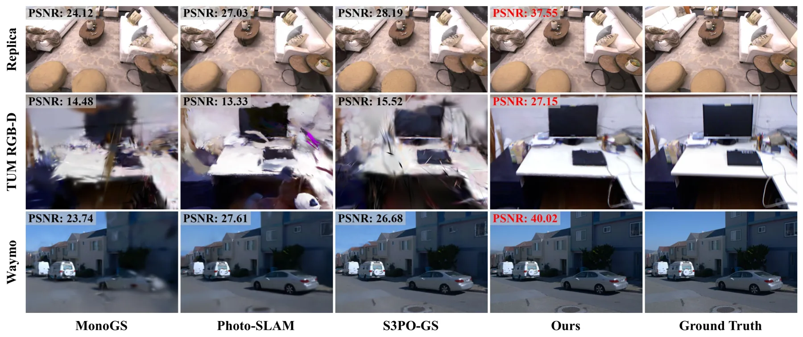
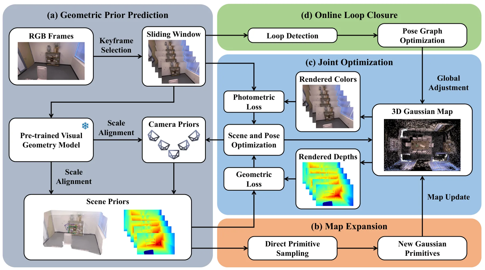
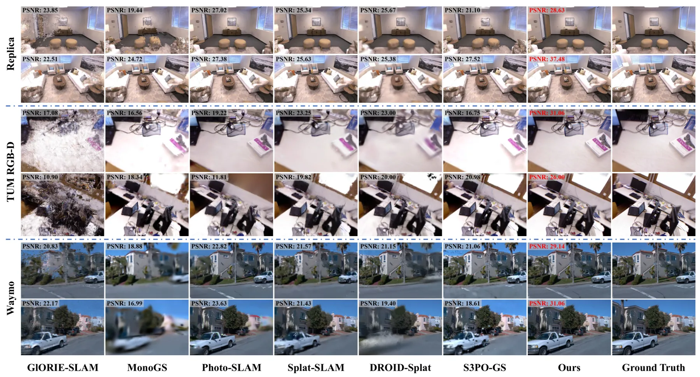
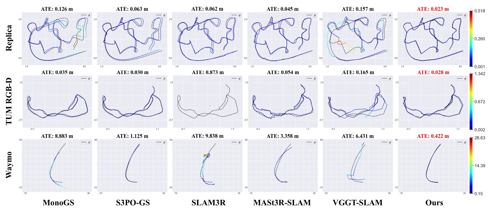
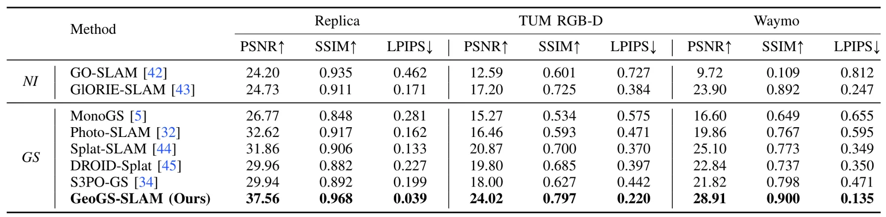
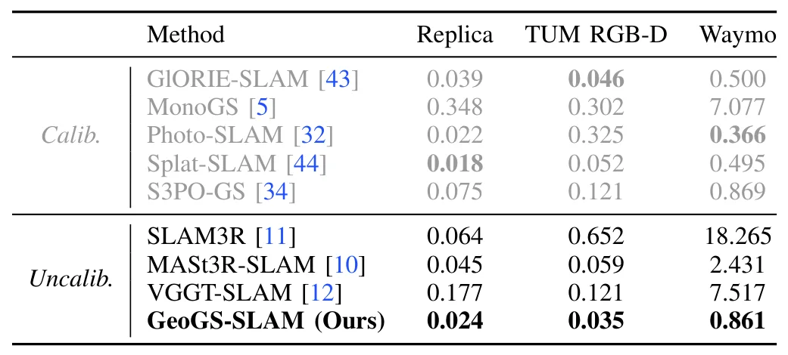
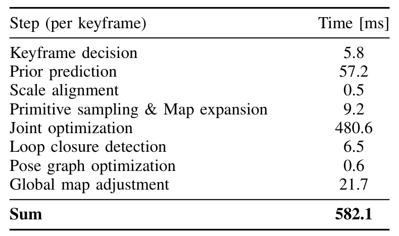
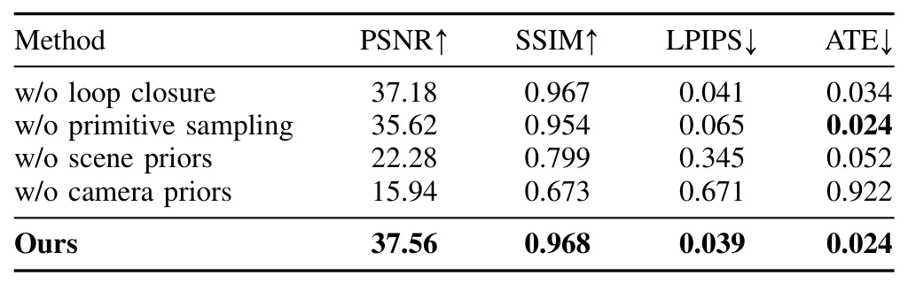

GeoGS-SLAM：利用几何先验的在线单目 Gaussian Splatting 重建GeoGS-SLAM: Online Monocular Reconstruction Using Gaussian Splatting with Geometric Priors
直接覆盖单目 3DGS-SLAM、联合跟踪建图、回环和全局优化，系统完整度最高；仍需核查实际帧率、ATE/RPE、内参处理和基础模型域外误差。
一句话工作总结
以学习几何先验初始化未标定单目输入，再用光度—几何联合优化、回环和位姿图维护实时 3DGS 地图。
摘要
GeoGS-SLAM 是一套将 3DGS 地图表示与学习式几何先验结合的在线单目稠密重建系统。面对未标定 RGB 输入，系统先通过前馈视觉几何模型预测相机和场景先验，再从 RGB 与几何先验直接采样 Gaussian primitive 扩展地图，并以 coarse-to-fine 策略联合优化相机位姿和场景地图，同时最小化光度与几何损失。为保证全局一致性，系统还加入在线回环检测和位姿图优化。作者称其在室内外 benchmark 上兼顾先进渲染质量、跟踪精度与在线实时性能。
SLAM methods based on 3D Gaussian Splatting (3DGS) have demonstrated impressive tracking and mapping performance, but typically require additional geometric information from external depth sensors. Meanwhile, recent SLAM systems that leverage geometric priors from pre-trained feed-forward models enable real-time dense reconstruction, yet often discard original RGB information during optimization, thus degrading overall reconstruction quality. We present GeoGS-SLAM, an online monocular dense reconstruction system that combines the 3DGS-based map representation with learned geometric priors. Given uncalibrated RGB input, we first employ a feed-forward visual geometry model to predict camera and scene priors. The Gaussian scene map is then expanded by directly sampling Gaussian primitives from both RGB input and geometric priors. Camera poses and the scene map are jointly optimized through a coarse-to-fine strategy that minimizes both photometric and geometric losses. To ensure global consistency, we further incorporate online loop closure detection and pose graph optimization. Extensive experiments across indoor and outdoor benchmarks demonstrate that GeoGS-SLAM achieves superior rendering quality and tracking accuracy compared to state-of-the-art methods while maintaining online real-time performance. Project page: https://rlgao.github.io/geogs_slam.
中文解读摘录
图表/页面预览
{kind=link}

{kind=link}

{kind=link}

{kind=link}

{kind=link}

{kind=link}

{kind=link}

{kind=link}
